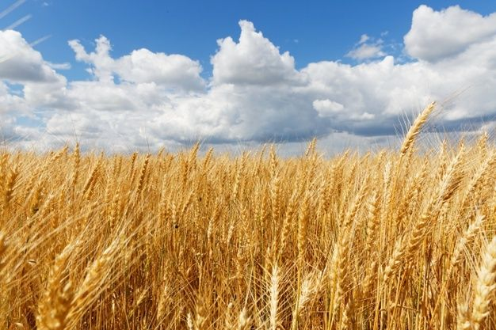
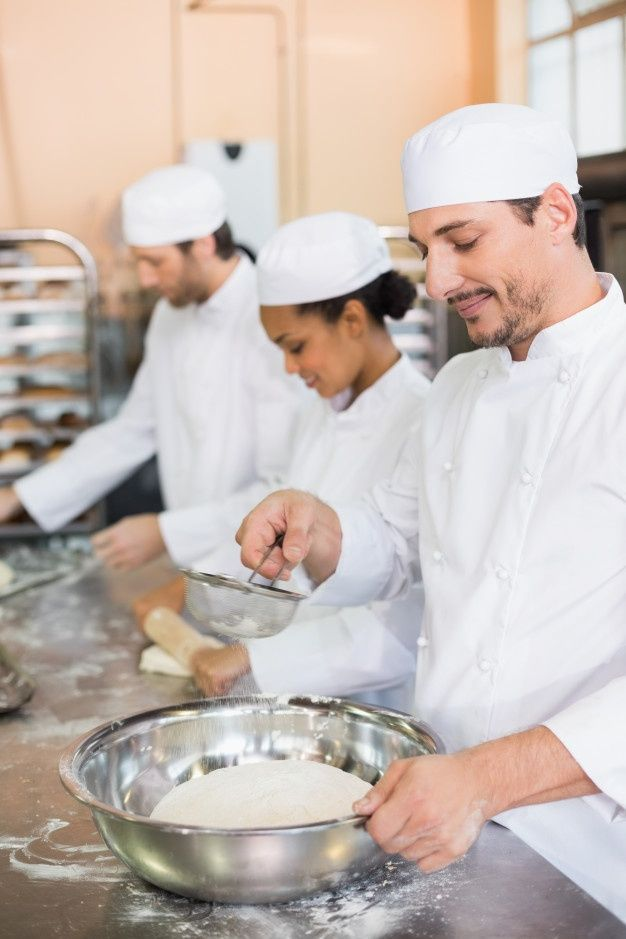
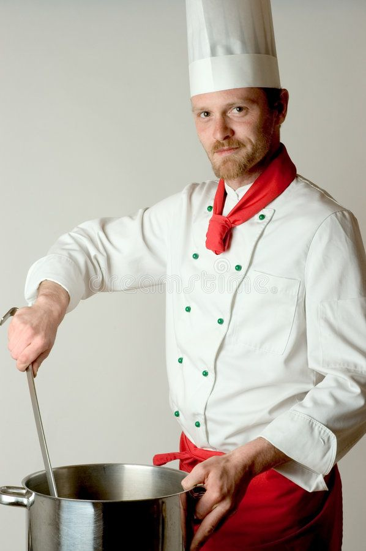

Sobre nós

Nosso processo começa com a seleção cuidadosa dos ingredientes, a maioria dos quais são produzidos localmente. Para garantir a qualidade dos nossos ingredientes, fazemos parcerias com produtores confiaveis e escolhemos apenas as melhores matérias-primas para os nossos produtos.

Nossos padeiros usam técnicas tradicionais para preparar a massa dos nossos pães, que são então cuidadosamente moldados à mão antes de serem deixados para crescer em um ambiente controlado. Nós garantimos que nossos produtos são feitos com tempo e dedicação, para que você possa ter a melhor experiência possível.

Nossas padarias tem fornos especializados que garante que os pães sejam cozidos uniformimente, resultando em um produto final saboroso e crocante. Nós também oferecemos uma ampla variedade de bolos e doce, que são feitos com ingredientes frescos e decorados com carinho.
Uma vez que nossos produtos são cozidos, são cuidadosamente embalados e rotulados para garantir que eles mantenham sua frescura durante o transporte e armazenamento.
Ofercemos uma variedade de opções de entrega para garantir que nossos produtos cheguem até você com rapidez e segurança.

Nosso compromisso é fornecer produtos de qualidade, feitos com ingredientes cuidadosamente selecionados e preparados com amor e dedicação. Esperamos que você aproveite nossos produtos tanto quanto nós adoramos prepará-los para você.